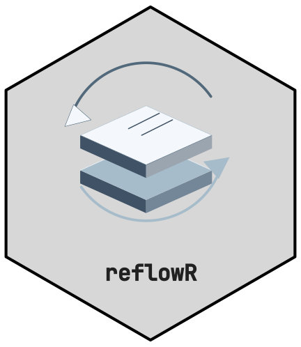

CTTIR v5 families
reflowR schemes are the nine topic families of the CTTIR v5 design
language, the same set used by hexmakR artwork and the themakR
documentation template. Every colour and font comes from
design_tokens.csv, shipped with the package in
inst/cttir/. Colour supports identity; text, headings and
links always use neutral tokens.
| Key | Label | Accent | Face, light | Face, dark | |
|---|---|---|---|---|---|
|
|
spectral
|
Spectral imaging |
#0072B2
|
#D7E6EF
|
#193443
|
|
|
spatial
|
Spatial biology |
#009E73
|
#D7EDE7
|
#193F34
|
|
|
omics
|
Molecular data |
#CC79A7
|
#F3E7EE
|
#4A3641
|
|
|
clinical
|
Clinical science |
#D55E00
|
#F4E4D7
|
#4C2F19
|
|
|
methods
|
Learning & inference |
#56B4E9
|
#E3F0F7
|
#2D4451
|
|
|
simulation
|
Systems & simulation |
#E69F00
|
#F7EDD7
|
#503F19
|
|
|
evidence
|
Evidence & discovery |
#F0E442
|
#F8F6E0
|
#524F28
|
|
|
platform
|
Research infrastructure |
#000000
|
#D7D7D7
|
#191919
|
|
|
brand
|
Science, connected |
#0072B2
|
#D7E6EF
|
#193443
|
brand is the CTTIR default and the default of
reflow_init(). Pick the family that best describes the
project:
| Context | Family |
|---|---|
| Clinical trial, patient data | clinical |
| Imaging and spectroscopy | spectral |
| Tissue and spatial assays | spatial |
| Sequencing and molecular profiles | omics |
| Statistical or machine-learning methods | methods |
| Simulation and systems models | simulation |
| Systematic reviews, meta-analyses | evidence |
| Software, data and infrastructure | platform |
| General purpose | brand |
Earlier scheme names
The five schemes of reflowR 0.1.0 remain accepted.
clinical keeps its name and now uses the v5 vermillion; the
others are aliases that print a one-time message:
| Earlier name | v5 family |
|---|---|
basic |
brand |
code |
methods |
special |
evidence |
other |
platform |
Generated site styling
reflow_init() writes analysis/theme.css
(workflowr) and assets/_theme.scss (Quarto report). Both
follow the themakR surface:
| Role | Light | Dark |
|---|---|---|
| Page and flat navbar | #FAFAFA |
#212121 |
| Text | #212121 |
#DADADA |
| Headings, navbar text | #212121 |
#FFFFFF |
| Links | #1565C0 |
#42A5F5 |
| Code surface | #E9E9E9 |
#2B2B2B |
| Borders, h2 rule | #D8D8D8 |
#4F4F4F |
Dark mode follows the reader’s system setting and can be forced with
data-bs-theme="dark" or body.colorscheme-dark.
The family accent marks only non-text identity elements: the 3px navbar
rule, the h1 underline, active navigation and table-of-contents markers,
callout borders and table header rules. Pages use the
--cttir-* custom properties of themakR plus
--cttir-topic.
Body text uses "Inter", system-ui, sans-serif, code
"JetBrains Mono", ui-monospace, monospace and the navbar
name JetBrains Mono at weight 600. Nothing is downloaded: sites without
these fonts fall back to system fonts.
In R code
code/00_setup.R provides the same values for figures and
tables:
wf_colors$primary # family accent
wf_colors$face # tinted surface, e.g. facet strips
wf_palette # Okabe-Ito topic colours, accent first
wf_fonts$body # "Inter"
ggplot(df, aes(x, y, colour = group)) + geom_point() +
scale_color_wf() + theme_wf()Inspect or preview a family directly:
reflow_schemes()
s <- reflow_scheme("spatial")
s$accent
s$palette
reflow_preview("spatial")